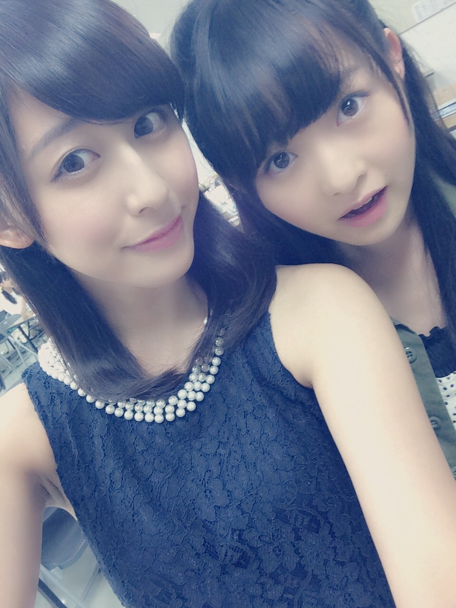
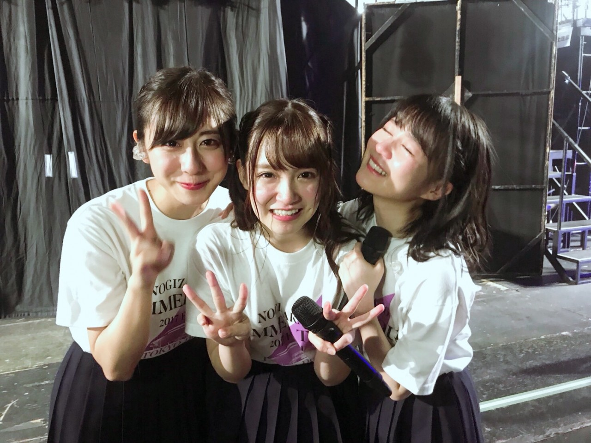
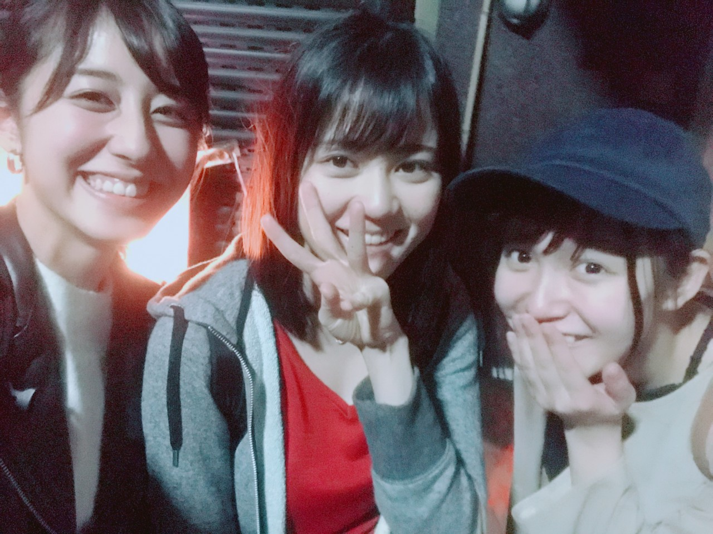
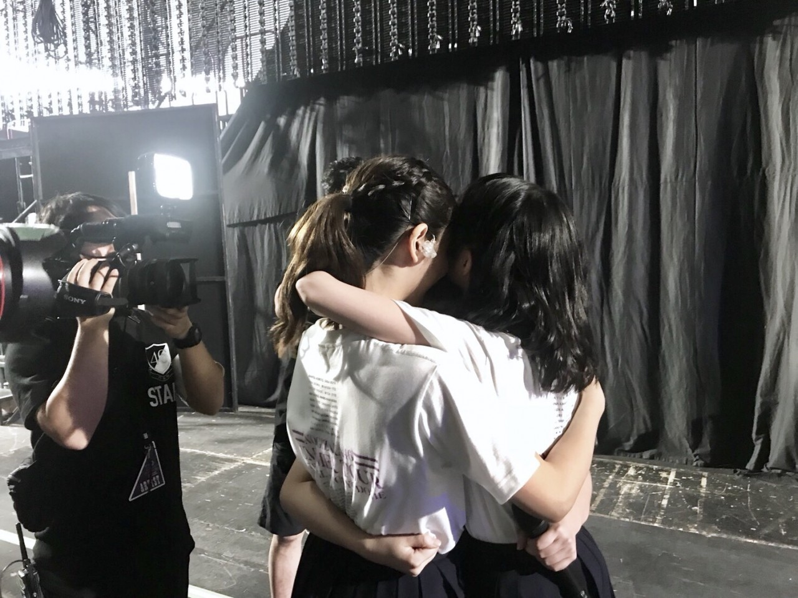
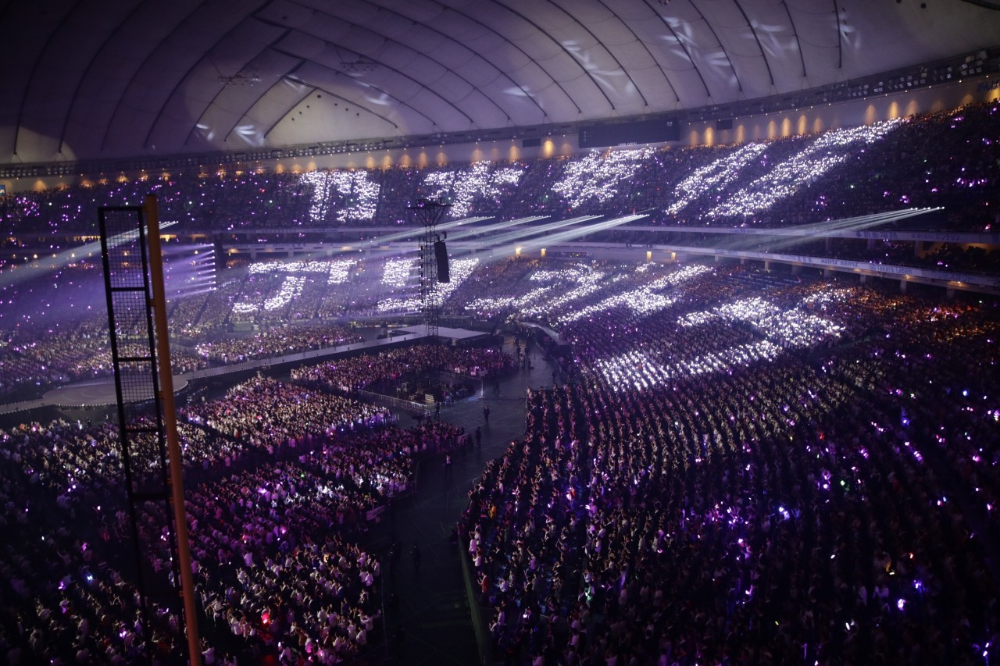

| 2017/11 12 Sun | 斎藤ちはる 東京ドーム |
ちはるーむへようこそ
夢だった東京ドーム公演が無事終了致しました！
東京ドームに立つのは、
2013年、2014年と2年連続で
パールボウルのコイントス、ハーフタイムショーをやらせていただいた以来です。
その時はまだまだ大きな夢だとは知りつつも、
東京ドームで単独でライブがやりたいね！
と密かにみんなで語り合っていました。
そしてその日から3年、4年越しに
やっと46人全員で
単独で東京ドームに立つことができて、
ここまで大きくなれたことに
心から嬉しく思います。
私たちを応援してくれている皆さん
支えてくれているメンバー
スタッフさん、卒業メンバーのおかげです。
全ての皆さんに感謝です
ありがとうございます。
そして東京ドーム公演をもって、
ひめたんと万理華のライブはお終いでした
本当にお疲れ様！！
最後のライブに一緒に立つことが出来て
本当に良かった
嬉しかったよ。ありがとう

懐かしい写真。
万理華のパフォーマンスが大好き！
かっこよくて凛々しくて可愛くて華やかで。
万理華が踊っているのを見ると
いつも目が奪われちゃう
ステージ映えするダンスが本当に大好き。
そんな万理華のパフォーマンスが見られなくなっちゃう...と思ったから
今回はリハーサルの時から釘付けでした

中3組でライブに立つのも最後でした。
6年前めーちゃんを最初見たとき
誰よりもアイドルっぽくて
ハキハキしていて可愛くて
同い年には思えないくらいしっかりしていて
最初は仲良くなれるか不安でした。
でも同い年だからこそ
仕事の話も、学校の話も
分かち合える悩みがあって
だんだんと仲良くなったよね
今ではいなくてはならない存在です。
そんなめーちゃんがいなくなるのは
とても寂しいしまだ実感湧かないけど
卒業したらゆっくり休んでほしい
今まで沢山気を遣って沢山気を張って
沢山悩んで沢山苦しんできたと思う
だからのんびり出来る今の時間を
大切にして体を労ってあげてね
中3組！
どこにいても、何をしていても、いくつになっても
永遠に私たちは仲間であり親友だよ。


来てくださった皆さんも
本当にありがとうございました！！
素敵な景色を見せてくれてありがとう。
この景色は私の宝物です

斎藤ちはる